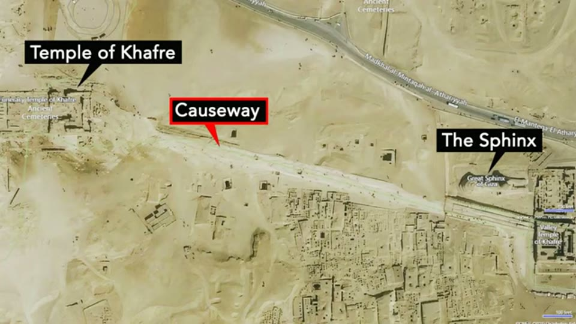
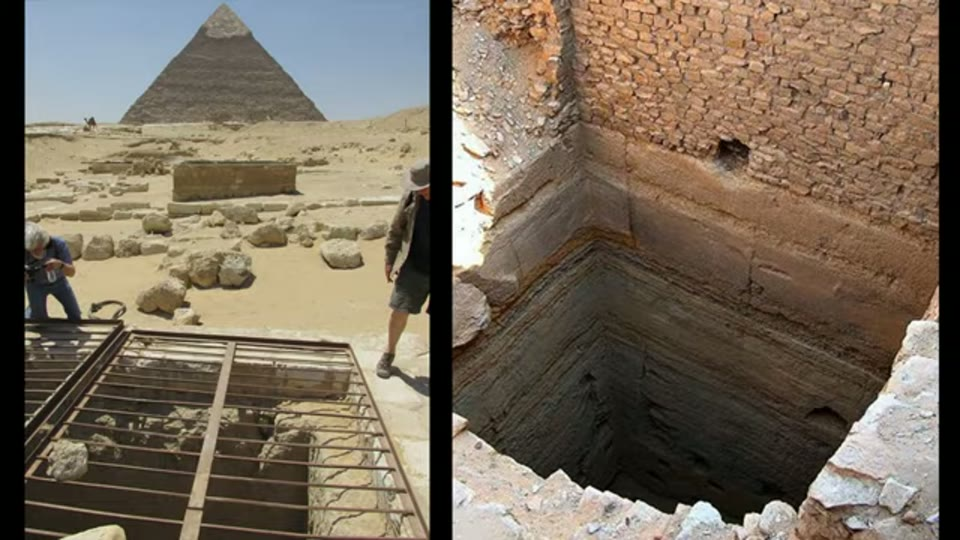
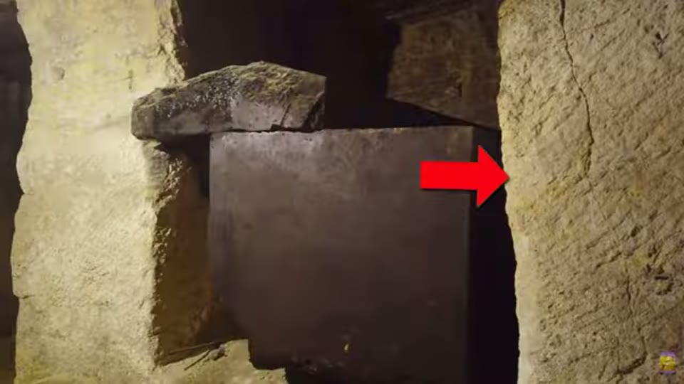
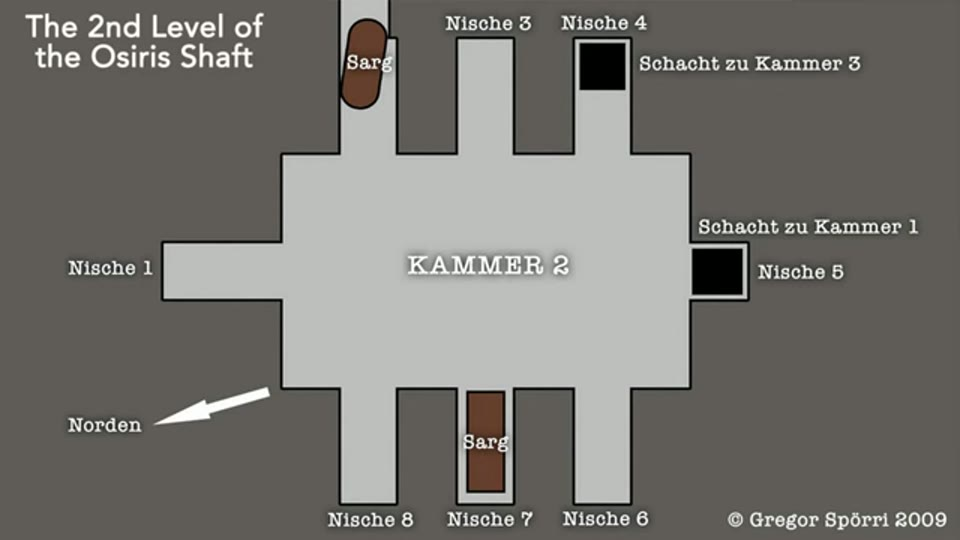
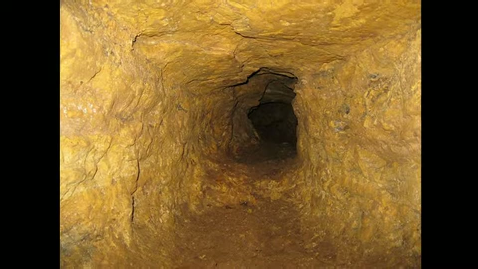

Curious Being
The Underground Complex: the Giza Osiris Shaft Created by a Lost Advanced Civilization?
Tina · 16 min · watch on YouTube · summarised 2026-09-27
The first of two videos on the Osiris Shaft, and the one that does the looking. The sequel takes the five characteristics listed here and works through what kind of modern structure they match; this one describes the shaft, argues it is not a tomb, and stops.
The shafts nobody can get into
00:36–01:46 Aerial photographs of the causeway running from the Sphinx to Khafre's pyramid show several rectangular shafts, identifiable by their shadows and highlighted by her on screen. What she draws out of them is the irregularity: not aligned, not the same size, not evenly spaced, not oriented the same way — apparently placed haphazardly. Ground-level photographs show sharp 90-degree cuts straight down into the limestone bedrock.
The bottoms are filled with sand, so nobody knows how deep they go, and the large shafts are locked and closed to the public. The Osiris Shaft — much smaller, and barely visible from the air — is the one accessible sample.


Several large shafts sit close to the Khafre causeway, cut square into bedrock, irregularly placed and closed to the public.
The tour
02:32–07:18 Three levels, three shafts, the whole thing cut from bedrock.
- A rock-cut pathway, a short tunnel, then the first shaft, short, down to a first level found empty and apparently just a landing. Tool marks at the bottom of the shaft.
- The second shaft drops straight down 16 m, 53 ft — about five storeys.
- The second level: a central open area with six surrounding niches — though the plan she puts on screen numbers eight, two of which are taken up by the shafts going up and down. Two niches still hold large sarcophagi said to be 5 to 7 tons each; one is solid black and, she says, surprisingly smooth, with a rough unfinished lid sitting askew on top of it. Large excavation marks are everywhere — evenly spaced, parallel, slightly curved — which she reads as the teeth marks of mining machinery, and which she says also appear on Giza megaliths and in the Great Pyramid's underground chamber.
- On one niche ceiling, a dark reddish-brown patch she suggests is iron oxide.
- The third shaft, about 10 m, 33 ft, down to the bottom level, where the marks are best preserved because there has been less erosion.

The geometry the whole argument is about: three levels on three shafts that do not line up.


The second level: a central chamber with niches around it, two of them holding large sarcophagi.
The dating she reports, and reports fairly 05:15–05:38: pottery shards and human remains were recovered from the second level and dated to about 500 BC. Her argument is that the rock-cut structure itself could be much older and that people found it and repurposed it as a tomb.
The bottom level 06:05–07:18. Dr Selim Hassan, who found the shaft in 1933, recorded the third level under clear water with an empty sarcophagus in the middle; he tried to pump it out and gave up after four years. The Giza water table has fluctuated considerably, which she offers as the cause. It is still flooded most of the time, full of silt, wooden platforms and debris.
And the feature she keeps coming back to: a narrow tunnel running off the lowest level for an unknown distance, roughly cut compared with everything around it, in rock of a different colour and texture.
I think the orangey color might derive from iron oxide and the rock texture looks like crystalline limestone which is marble. I am far from a geologist, so this is a lay person's conjecture.

The striations she reads as the teeth marks of mining machinery.

The roughly cut tunnel running off the flooded bottom level, in rock of a different colour and texture — the feature she calls most interesting.
Why she says it is not a tomb
07:18–09:36 The argument is a comparison, and she makes it in the right direction — against the best examples of the thing it is supposed to be.
The tombs in the Valleys of the Kings and Queens are elaborately decorated, displaying the wealth of the people buried in them. The Osiris Shaft has no decoration at all: no murals, no painted ceilings, walls not even finished. And the layout is wrong for a burial — she puts the plans side by side, and the royal tombs are level and accessible, their small changes in height managed with staircases, where the Osiris Shaft drops vertically. Carrying a body down, or coming back to pay respects, would be very difficult.
She extends the point to the pyramids: their chambers and passages have no hieroglyphs and no decoration either, which is the opposite of Egyptian building style, and no mummy was recovered from them.

Her case that this is not a dynastic tomb, made against the best-documented tombs in Egypt.
The Inventory Stela 09:24–09:56. Found in the 1850s during excavation at the Temple of Isis on the Giza plateau, the stela is, she says, 2,700 years old, and its text implies the Great Pyramid, the Sphinx and the Temple of Isis already existed before Khufu's time. She adds that no theory of pyramid construction has ever won majority support.
The figure she uses is from a named paper — The Inventory Stele: More Fact than Fiction, by Manu Seyfzadeh and Robert M. Schoch — and it carries the dating on its face: the panel of the stela printed beside the cartouche comparison is labelled Psammtik, a 26th Dynasty king, which is what puts the object in the Late Period and gives the 2,700 years she quotes.

The stela whose text she says implies the Great Pyramid and the Sphinx predate Khufu.
What it is not
14:00–15:25 One candidate gets tested and rejected. The bottom level is permanently flooded and older local people remember swimming in the shaft, which would fit water wells — and she has argued elsewhere for a long drought at the right period. But a well is a straight tube: it does not need separate levels or multiple shafts, and wells are not sunk close together because that is not cost effective. The exception is the qanat, the Middle Eastern system that brings water from an aquifer along an underground aqueduct, whose access shafts do sit close together — but qanat shafts line up, and the Giza shafts do not.
She ends by saying the answer to the five characteristics is coming in the next video.
What you can check yourself
- The five characteristics are all photographable: unaligned shafts on multiple levels, the six rooms on the second level, the tool marks, the reddish patches on the ceilings, and the tunnel at the bottom.
- The depths are published figures — 16 m for the second shaft, about 10 m for the third.
- Selim Hassan's 1933 account is a published excavation record, including the standing water and the four failed years of pumping.
- The 500 BC dating of the pottery and human remains is an excavation result, and she reports it accurately.
- The Giza water table's fluctuation is documented in hydrological work on the plateau.
- The Inventory Stela is a real object with a published text and a date. Both are worth looking at, and the date is the whole of the argument about it.
- Royal tomb plans are published, so the comparison she draws — level and stepped against vertical drops — can be checked against any of them.
- Qanat shafts line up, which is visible in any aerial photograph of one.
- Whether decoration is absent from the Great Pyramid's chambers and from this shaft is something any visitor can confirm.
What the video does not settle
- The depths on her own diagram are not the depths she speaks. The 3D reconstruction she shows gives both the middle and lower shafts as 12 m deep; the narration gives 16 m and 10 m. Neither figure is sourced.
- The same diagram labels the chambers as graves. The German reconstruction on screen reads Kammer mit 6 Grabnischen — chamber with six grave niches — and rekonstruierte Grabkammer, reconstructed burial chamber. It is the third slide in this group of videos where the figure used to argue against the tomb reading carries the tomb reading in its own labels.
- The Inventory Stela's date is given and its consequence is not. She dates it herself to about 2,700 years old, roughly nineteen centuries after Khufu reigned. In the brain sizes video she dismisses Herodotus on the pyramids because he was writing "over 2,000 years after". The two are not set against each other.
- "Repurposed" is asserted against the only dating evidence present. Pottery and human remains put people in the second level around 500 BC. That the cutting is older is the claim, and nothing in the video dates the cutting at all.
- The marks are compared, never measured. Footage of masons with chisels and pickaxes is set against the shaft striations and the conclusion is that hand tools could not do it. No width, no spacing, no depth, no angle — and her own later work sets out a corner test for exactly this question.
- The image running under the machine-marks claim is a tourist selfie. The panel captioned The Osiris Shaft, set beside a photograph of a modern cutting machine, is two people filling the frame with the marked wall visible only around them. The comparison is asserted over a picture that does not show it.
- The geology is guessed at, and she says so. Iron oxide and crystalline limestone are offered as a layperson's conjecture from colour and texture. No sample is taken, and it is the feature she calls the most interesting.
- A sarcophagus described as "surprisingly smooth" is described and not measured, where surface finish is elsewhere the whole argument.
- She notes the walls are "not even finished" and does not connect it to the absence of decoration. The absence is treated as evidence of a different builder.
- "Not a single theory has gained majority support" about pyramid construction is asserted with nothing behind it.
- The well argument is the only alternative tested. Bunkers, storage, aqueducts and the rest are handled in the sequel; here the case rests on ruling out one option.
- Nothing is offered for the age of the shafts. The video's title asks whether a lost advanced civilisation created them, and the only evidence bearing on age is a burial deposit from 500 BC and a stela from around 700 BC.
See also
The Osiris Shaft: Part of a Prehistoric Mine from a Lost Civilization? — the sequel, which takes the five characteristics listed here, rules out bunkers, storage, aqueducts and nuclear facilities, and argues for shaft mining.
Prehistoric Mining: What was Mined on the Giza Plateau — the ore, and the staining near Khafre's causeway where these shafts are.
Were the Egyptian Pyramids Originally a Prehistoric Mine? — the consolidated statement, which gives dimensions for the larger shafts at Saqqara.
The Change of Human Brain Sizes — where she rejects Herodotus on the pyramids because of the gap between the event and the writing.